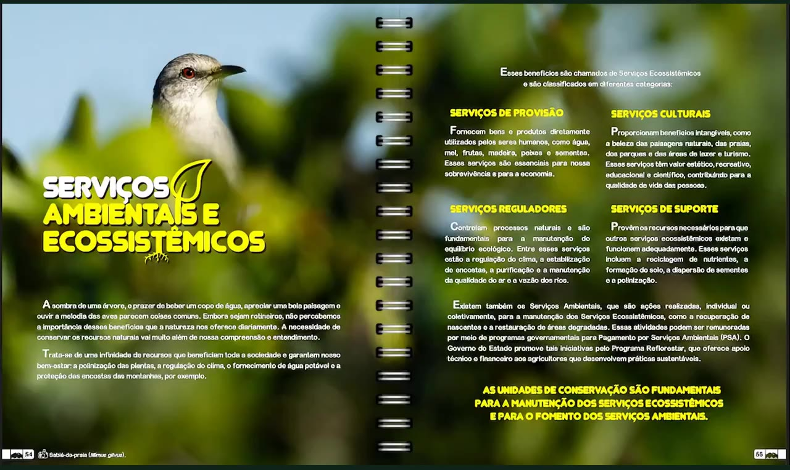

Preservando o Nosso Quintal · Libras
Serviços ambientais e ecossistêmicos
Páginas 64 e 65

🤟
Vídeo em Libras com intérprete
Aqui entra o vídeo desta página gravado por intérprete de Libras. Enquanto ele não fica pronto, use a aba Avatar.
A tradução por intérprete humano é a forma preferida pela comunidade surda: traz expressão facial, ritmo e escolhas de sinais que o avatar automático ainda não faz.
1Toque no botão azul de Libras que aparece na lateral da tela.
2Depois toque em um dos trechos abaixo. O avatar traduz o trecho em Libras.
Tradução automática feita pelo VLibras, ferramenta pública e gratuita do Governo Federal. A tradução automática pode ter imprecisões.